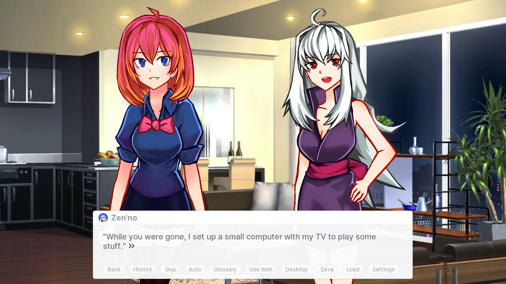
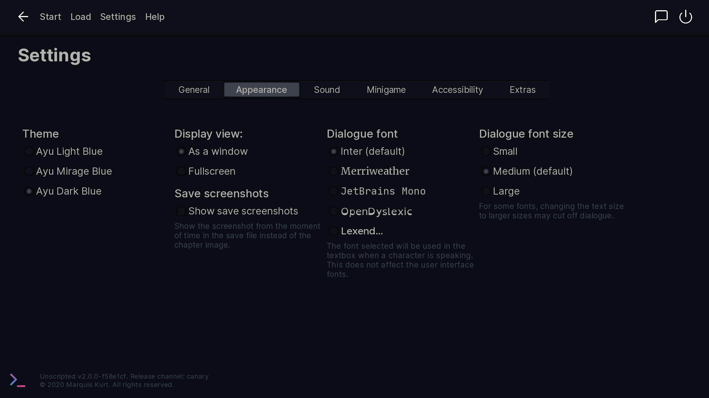
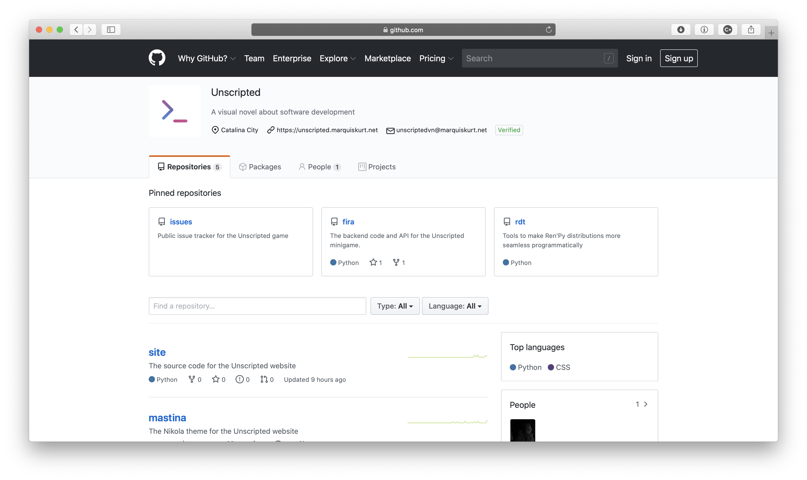
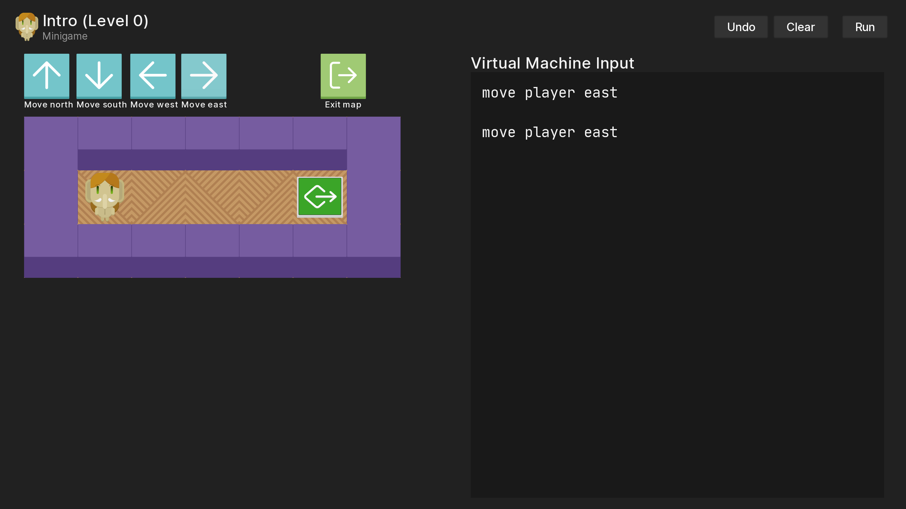

It's been about a couple of months since I wrote the last devlog that outline what's been going on, and I figured it's time for me to do the same thing again since I haven't posted much on the official site. Here's a rundown of what's been happing the past few weeks with Unscripted.
Extended demo updates
Recently, I published the v1.2.4 release of the extended demo, which contained a couple of bugfixes and improvements:
- Resolves an issue where the AliceOS desktop could be called infinitely on the call stack.
- Adds argument options via arguments.toml.
- Adds a glossary page in Help with terms and definitions.
- Adds use cases for inventory items in some parts of the game.
- Changes notification toast when an item is received to the game’s default, not AliceOS’s.
- Removes documented features in Help that don’t exist.
I imagine that, unless there are major flaws in the current release of the extended demo, there won't be any future updates as development builds will most likely break compatibility with older releases.
Hello, Ayu
Over the past two weeks, I've been working on making Unscripted's user interface and brand consistent. Part of this included reconsidering the color scheme and general user interface look. After some deliberation, I've worked on implementing a variation of the popular Ayu color scheme as the theme for Unscripted. Ayu offers vibrant colors and a great set of colors to work with.
In-game screenshot of Ayu Light theme.
Appearance page in Ayu Dark theme.
Since Ayu offers light, blue, and dark variations of the color scheme, I've implemented a new theme system for the game and include all three variations. The official website also got a bit of a makeover to include the new colors, as well as the Itch.io page. I've also implemented some quality-of-life additions to the game to customize its appearance:
- You can now select which font you want to use for dialogue as well as its size.
- The Merriweather and OpenDyslexic fonts have been added as font options.
- The Lexend fonts are now a sub-page to Appearance (Settings › Appearance › Dialogue font › Lexend...) instead of a slider. This should hopefully resolve some font selection issues.
Calling all playtesters

Within the past months, I've also been on the hunt for playtesters to get feedback of the game as it's being developed. I've consulted people on Twitter, Reddit, and Discord as I continue to work on the game. I've gotten feedback from a few people and have made improvements to the game as I receive more suggestions. Previously, I had been only accepting members on a limited basis since I was still working out the kinks in the system.
Now that everything's all organized and ready to go, I've decided to open the game up to more playtesters on a semi-public beta program known as the Unscripted Playtesting Program. The playtesting program is a great way to get involved and give feedback on the project as I develop it. The new playtesting program page outlines the process, requirements, and what happens in the beta program. I welcome and encourage players to try out the latest development builds and help make Unscripted reach its full potential.
Unscripted ♥️ open-source and GitHub
Back in late 2019/early 2020, I released the Ren'Py Distribution Tools module (renpy-distribute-tools) as an open-source module on GitHub to help streamline distribution of visual novel projects. This module has made its way to PyPI and migrated over to a new place on GitHub for all Unscripted-related code.

Since then, there have been a couple of other repositories open:
-
mastina, a Nikola theme for the Unscripted website -
fira, the backend and API mechanisms for the current minigame
You might also recall in an earlier post that a new GitHub repository is available to report bugs and request features for the game, which replaced YouTrack. GitHub is also where a lot of work on Unscripted takes place, ranging from the minigame to the core story. With the new playtesting program in place, this also is where a lot of developer builds for testing take place.
Additionally, open-source software is what makes Unscripted possible; libraries such as discord-rpc and projects like Ren'Py, Inter, and Feather icons have helped bring Unscripted together to the game it is today. I make it a point to thank the open-source community by acknowledging them in both the credits and the game's license.
So, why bring up open-source software and GitHub? I personally am a believer in open-source software; open-source software has helped me grow as a developer and has taught me a lot of valuable things. Open-source modding projects for DDLC have also taught me a lot of what I know with both Python and Ren'Py.
I anticipate that some players and developers may want to better understand how I do some things in Unscripted or may want to contribute to the project to catch any bugs. I want to make Unscripted a place to go to learn new things and try out what's available with Python and Ren'Py just like how I did when making mods for DDLC, so I've decided that I will be open-sourcing some core utilities and modules inside of the game itself known as the Unscripted Core. In fact, I made this decision all the way back in January; some of the demo builds use this new open-source code!
The game is mostly set up to handle open-sourcing Unscripted Core. In the final release of the game, the source code for Unscripted Core will be available right in the game as a standard Ren'Py archive. You can also expect to see the GitHub repository available in the following weeks, licensed under the Mozilla Public License v2.0, the same license used in Unscripted Fira, Mastina, and the Ren'Py Distribution Tools. I can't wait to reveal what's been under the hood.
An overhaul of the minigame... again...

When I released the extended demo, I introduced a brand new minigame where players control a mastodon with a series of commands, either by clicking buttons or using Python, to collect a bunch of coins and reach the end of the map. After receiving some feedback from playtesters, I realize that the minigame isn't the most enjoyable thing in the world.
I hope that, within the next month or so, I will have a fully working rewrite of the minigame with more appealing visuals, a coherent plot, and a new input mechanic. In the coming weeks, I also intend to rework the story a bit to turn the minigame into the game that the main character will eventually publish to the PackStore. I will post details on the progress I've made on the minigame as they get developed; I've got some exciting ideas that will be interesting to implement.
I know this was a long devlog, but I thank you for reading all the way through. I look forward to sharing more information on Unscripted's progress!
- Marquis